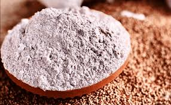
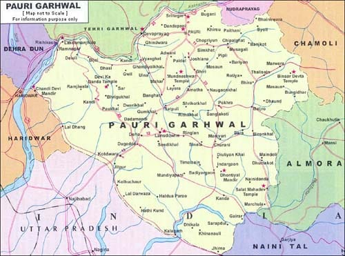

Mandua Atta, also known as Finger Millet Flour, is a traditional and nutritious food grain widely consumed in the hilly regions of Uttarakhand, especially Pauri Garhwal. Rich in calcium, fiber, and iron, Mandua is a gluten-free grain that supports digestive health and is excellent for individuals with diabetes and those aiming for a healthy lifestyle. The flour is used to prepare chapatis, pancakes, and traditional dishes such as Mandua ki Roti. With its earthy flavor and rustic appeal, Mandua Atta is regaining popularity across the country as a superfood. It is organically grown by local farmers without the use of harmful pesticides, making it a sustainable and healthy option for consumers.
Mandua cultivation in Pauri dates back centuries and forms a core part of the Garhwali cuisine. The cold climate and terraced farms of the region are well-suited for Mandua farming. Traditionally consumed during winters, Mandua provides warmth and energy to the body. Local festivals and community gatherings often include dishes made from this humble grain. Apart from its nutritional value, Mandua Atta holds socio-economic importance as it empowers many rural women and small farmers through cooperative farming and self-help groups.
To purchase authentic Mandua Atta from Pauri Garhwal, you can contact the Mandua Farmer Producer Organization at +91 8428611319 or email at support@mypahadidukan.com. Visit their website at https://mypahadidukan.com/products/mandua-koda-flour-finger-millet-ragi?srsltid=AfmBOoqlHB8X-Y6hGorIJ8_JVi4Q-1t51WBwVJbN1h0V4KB011S2Lml5&utm_source=chatgpt.com or explore Mandua products at Pauri local markets like Agency Market and District Organic Mart.

- Mandua is one of the oldest cultivated grains, dating back to ancient Himalayan civilizations.
- Often called the "Poor Man’s Grain," it is now hailed globally as a superfood.
- In Garhwali households, Mandua Roti with ghee and jaggery is a traditional comfort meal.
- The cultivation of Mandua supports agro-ecological balance by requiring minimal water and naturally enriching the soil.